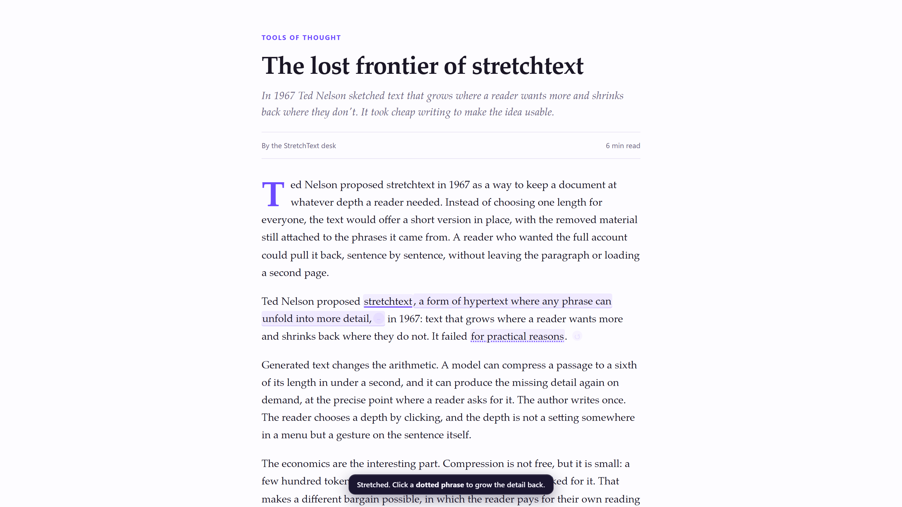

Select a paragraph on any page. StretchText replaces it, in place, with a short version — and the detail you skipped stays attached to the phrases it came from. Click a dotted phrase and it grows back right there. Click again and it shrinks.
Chromium 110+ · bring your own Pollen · no backend, no tracking, no store listing yet

This page runs the same interaction on hand-written data, so it works with no key and no network. In the extension the same click asks your model of choice for the sentence that was cut.
Reduced to about a sixth of the words. The light text is what the model put back when you asked.
One selection, one completion, one more per phrase you open. Nothing is thrown away.
Select text and press Alt+S. The selection is swapped for a kernel of roughly a
sixth of its length; the original nodes are kept aside.
The model marks two or three short phrases. A click sends the original passage and the phrase you clicked, and the missing detail streams in after that phrase.
The − collapses the detail, the ↺ puts the original paragraph back
exactly as it was. Every result is cached for the session.
Unpacked for now. It takes about twenty seconds and works in Chrome, Brave, Edge and Arc.
git clone https://github.com/vilanchik654/stretchtext # or download the ZIP # chrome://extensions → Developer mode → Load unpacked → pick the folder
Then click the icon once, sign in with Pollinations, and pick a budget. The key lives in this browser session only; page text goes nowhere except the request you asked for.